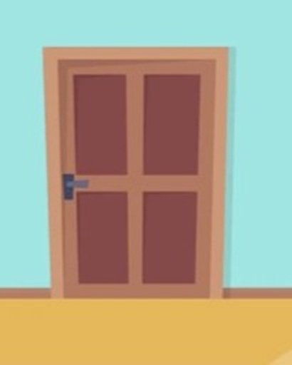

<!DOCTYPE html>
<html lang="no">
<head>
    <meta charset="UTF-8">
    <meta name="viewport" content="width=device-width, initial-scale=1.0">
    <title>Save Kenny!</title>
    <style>
    
        body {
            font-family: Arial, sans-serif;
            text-align: center;
            margin: 50px;
            background-color: #A0E5E2;
            background-image: url(https://i.pinimg.com/736x/f2/05/19/f2051982f5493225ad2fe5993fe466b9.jpg);
            background-size: cover;
            background-position: center;
            background-repeat: no-repeat;

        }

        h1{
            background-color: brown;
            color: white;
            padding: 20px;
            border-radius: 10px;
            display: block;
            width: 500px;
            margin: auto;
        }

        #result {
            margin-top: 20px;
            font-weight: bold;
        }
        p{
            color: red;
            font-size: x-large;
        }
    </style>
</head>
<body>
    <div id="app"></div>

    <script>
        // MODEL
        const riddles = [
            {
                question: "Stan har fått et kjærlighetsbrev, og det trenger plass for å puste. Hva kan han bruke for å gi brevet litt rom rundt teksten?",
                answer: "padding",
                hint: "Når du gir et element litt luft, gjør du det mer behagelig å lese - et rom rundt innholdet."
            },
            {
                question: "Cartman sier alltid at han er den beste. For å komme deg videre, må du kode som han. Den aller første koden handler om å lage struktur. Hva er elementet som holder innholdet godt sammen?",
                answer: "<div>",
                hint: "Dette er ett av de grunnleggende elementene i HTML, og det brukes til å gruppere innhold."
            },
            
            {
                question: "Kyle vil ha en grønn hatt, men hva med de andre? Fargene deres er viktige i vår verden, men for å skape magi, må du gi dem liv med stil. Hvilken CSS-egenskap kan du bruke for å farge dem?",
                answer: "color",
                hint: "Bruk denne egenskapen for å endre teksten til hvilken som helst farge du ønsker. Tenk på hva som skjer når rød møter blå!"
            },
            {
                question: "Kenny kan aldri si noe tydelig, men hans meldinger kan bli klare hvis du aktiverer riktig funksjon. Hvilken JavaScript-funksjon gjør at du kan skape en varsling til spilleren?",
                answer: "alert()",
                hint: "Dette er en av de enkleste funksjonene i JavaScript; den viser en liten boks med tekst. Tenk på hva du ville sagt hvis Kenny kunne snakke!"
            }
        ];

        
        const winMessage = "Du reddet Kenny!";
        const loseMessage = "Å nei! Kenny døde!";

        let attempts = 0;
        let currentRiddle = riddles[Math.floor(Math.random() * riddles.length)];

        // VIEW
        function CreateHTML(){
            const app = document.getElementById("app");
            app.innerHTML = /*html*/ `
            <h1>Save Kenny!</h1>                                            
            
            <p id="riddle"></p>
            <input type="text" id="answer" placeholder="Skriv svaret her...">
            <button onclick="checkAnswer()">Sjekk svar</button>
            <p id="result"></p>
            <p id="hint"></p>

            `;
            
        }
        CreateHTML();
        
        function setRiddle() {
            document.getElementById("riddle").innerText = currentRiddle.question;
        }
    
        function showImage(imgSrc) {
            document.getElementById("resultImage").src = imgSrc;
        }

        function showMessage(message){
            document.getElementById("result").innerText = message;
        }

        function showHint() {
            let hintElement = document.getElementById("hint");
            hintElement.innerText = "Hint: " + currentRiddle.hint;
            hintElement.style.display = "block"; 
        }

        // CONTROLLER
        function checkAnswer() {
            let userAnswer = document.getElementById("answer").value.trim();

            if (userAnswer.toLowerCase() === currentRiddle.answer.toLowerCase()) {
                showImage("img/Alive.png");  
                showMessage(winMessage);
            } else {
                attempts++;
                if (attempts === 1) {
                    showHint();
                } else {
                    showImage("img/Dead.png");
                    showMessage(loseMessage);
                }
            }
        }

        setRiddle();

    </script>
</body>
</html>
